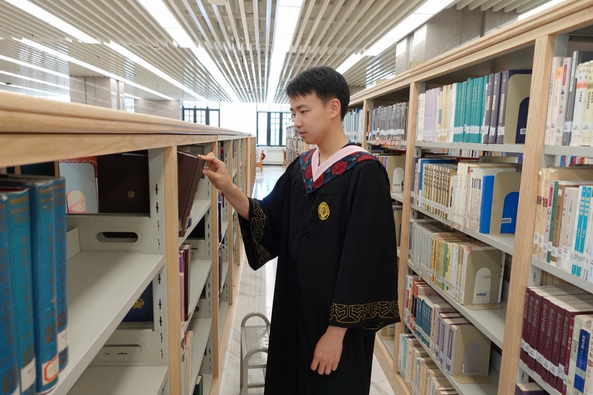

Tsinghua University, Ph.D. in Computer Science

Qilong Shi (史奇龙)
Ph.D. candidate · Department of Computer Science · Tsinghua University
[Google Scholar] [GitHub]
Research Interests
Sketch-based network measurement and data stream mining; efficient LLM reasoning, model merging, and supervised fine-tuning.
Education
Peking University, B.Sc. in Computer Science
Experience
Qihoo 360, Research Intern · Large Language Models
Efficient reasoning, model merging, and supervised fine-tuning.
Tsinghua University, Teaching Assistant · Big Data and Machine Intelligence
Selected Honors
- Selected Participant, IETF Elite Talent Program (菁才计划), IETF 125 (New Participants)
- Siebel Scholars Award
- First Prize, Outstanding Paper Award, Computer Academy of Guangdong (BitMatcher)
- Huawei Scholarship, Tsinghua University
- First-Class Undergraduate Scholarship, Peking University
Academic Service
- Program Committee, IEEE ICDM 2026 (Teen Track)
- Reviewer, ACM SIGKDD 2024, 2025, 2026, 2027
- Reviewer, ACM WSDM
- Reviewer, IEEE Transactions on Dependable and Secure Computing
- Reviewer, The VLDB Journal (2026)
- Reviewer, PLOS ONE (2026)
- Reviewer, Cluster Computing (2026)
Publications & Preprints
* Equal contribution.
[TKDE'26] Filtering and Accelerating: A Unified Framework for High-Performance Persistence Estimation
[WWW'26] JitterSketch: Finding Jittery Flows in Network Streams
[ACL'26] Thinking with Reasoning Skills: Fewer Tokens, More Accuracy
[NeurIPS'26] Beyond Parameter Arithmetic: Sparse Complementary Fusion for Distribution-Aware Model Merging
[arXiv'26] A Primer in Post-Training Reasoning Data: What We Know About How It Works
[EMNLP'26] ScienceArena: Benchmarking LLMs on Latest Scientific Olympiad Competitions
[arXiv'25] TinyR1-32B-Preview: Boosting Accuracy with Branch-Merge Distillation
Updated April 2026; first posted in 2025.
[KDD'25] HeavyLocker: Lock Heavy Hitters in Distributed Data Streams
[KDD'25] Cooled-KLL: Enhancing Quantile Estimation by Filtering Hot Item
[ICDE'25] Hypersistent Sketch: Enhanced Persistence Estimation via Fast Item Separation
[KDD'25] PSSketch: Finding Persistent and Sparse Flow with High Accuracy and Efficiency
[IWQoS'25] HeavyFinder: Efficient and Fine-Grained Heavy Hitters Detection with Instantaneous Flow Rate
[BigData'25] Edge-Optimized Voice Control with 0.26M Parameters: Distilling 86M Adaptive Window Audio Transformer for Real-World Variable-Length Inputs
[ICDE'24] BitMatcher: Bit-level Counter Adjustment for Sketches
Outstanding Paper Award (First Prize), Computer Academy of Guangdong, 2024.